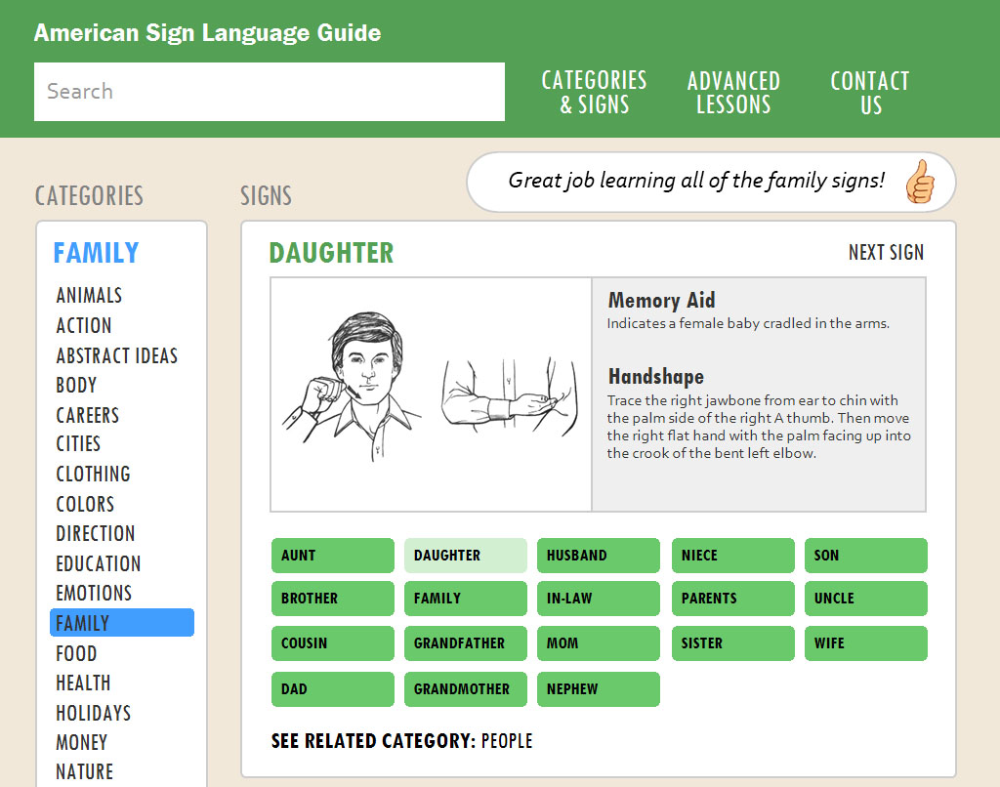

The American Sign Language Guide
A Personal Project by Brandon Falcone


Table of Contents
Contextual Inquiry
User Models
Design
Information Architecture
Prototype
UX Evaluation
A Personal Project by Brandon Falcone
Contextual Inquiry
User Models
Design
Information Architecture
Prototype
UX Evaluation
I became interested in ASL (American Sign Language) after meeting a few people in the Deaf community. I decided to learn ASL because it bothered me that I had no way to communicate with the Deaf. I wanted to live in a world where more people learned sign language and the Hearing and Deaf could communicate as regularly as the Hearing. To my suprise, there was not a single useful or modern website that taught ASL. After spending 1 year learning from books at my local library and occasional practice with a signing friend, I came up with an idea for a much needed online resource for learning the language.
I analyzed a variety of digital and physical resources on the web and at my local library. Finding a single website that taught ASL vocabulary, grammar, and sentence structure was difficult to find. Existing websites that attempted to teach all of these subject were plagued with design issues making them unpleassant and difficult to learn. The websites I discovered from Google’s top search results contained the following issues:
I needed to understand how people learn ASL outside of my own learning experiences in order to understand the needs of different users. By being conveniently located near Gallaudet University, a federally chartered university for the education of the Deaf, I had more access to ASL signers than anywhere in the country. I prepared some research questions, journied to a familiar campus setting, and interviewed students. I sought out how users learned the language, what difficulties they faced, and tips for others wanting to learn the language.

Constructing a WAAD (Work Activity Affinity Diagram) is one of my favorite exercises in a UX lifecycle process. To begin, I converted the contextual data I gathered from user research into work activity notes. I grouped these notes into related issues and themes and attached labels to each group. I analyzed the completed WAAD and formed requirement statements, each one focusing on a partular user need or system function. Below is a sample requirement statement that was created.

My goal was to provide people beginning to learn ASL with a complete guide to the language in addition to addressing the issues found in existing websites. My solution to these issues would be to have better navigation, more exploration, and faster learning capabilities. Most importantly, the website needed to be usable by my target audience.
The primary work role of the website is the Beginner ASL Learner. The two major user tasks of this work role are (1) to learn signs and (2) to learn the syntax of the language in order to string signs together and form sentences. Because this work role has such a broad user population, it requires multiple user class definitions to describe all the different kinds of people that can assume this role. I researched the Beginner ASL Learner work role and identified the most popular user classes. These include:
I considered what the design might look like for each of my user classes in order to identify a primary persona. Designing a website with font size large enough for the Elderly to read was an important design consideration that would not negatively impact the other personas. Since all of the user classes have such similar goals, I selected Elderly Suffering from Late-Stage Hearing Loss as my primary persona.


Signs and Syntax are the 2 main components of ASL. I wanted to keep these two separate in order to accomodate the two major user tasks. I designed a system that would allow users to freely switch between these tasks. Each Sign Page includes example ASL phrases pertaining to a few syntax lessons. Clicking on the lesson will take you to the Lesson Page where you can learn all about syntax. When clicking on an ASL vocabulary word from the Lesson Page, you will be routed to the word's associated Sign Page.


Attractive products that make us happy can improve our ability to use the product. So, I designed an organized layout and chose a relaxing color scheme that creates a natural and calming affect in the user. I also included a message display area that compliments the user while learning.
I looked for the best design that would meet the users needs and the primary goals of the system. My first few designs were not the best in meeting these goals. Only after iterative cyles of UX evaluation and design refinement was I confident that I was on the right track to creating the right design.
The design of the website allows the user to quickly learn signs that strongly relate to each other. For example, the signs for TODAY and YESTERDAY are contained on the same page since they both belong to the TIME category. Grouping signs into categories gives structure to the website and provides easy learning and fast findability.
The information architecture of the website allows content to be both finable and searchable.
To have good findability, global navigation contains a search bar where users can search for any ASL sign.
A page exists for each category of signs, and contextual navigation provides a list of these categories at all times.
To have good searchability, users need to be able to easily find information from an unknown location, such as Google.
Since web pages exist for each category of sign and not to any individual sign, I anticipated this would create poor searchability in the Google search results.
URLs such as theASLguide.com/category/time might look irrelevant in the search results to someone searching for “today ASL sign”.
My solution was to attach a list of all ASL words that fall into a certain cateogry to the description attribute within the meta tag for each category page.
This allows for the sign being searched to appear in the Google search result.
The grouping of signs into categories is a major part of the website's organization. Using the Codenames board game, I was able to quickly conduct an Open Card Sort using 200+ words, each representing an ASL vocabulary word. I was able to validate some existing categories and identify new ones. Additional Closed Card Sorting sessions focused on specially chosen words would be beneficial for validating the signs of a few categories.


I used Marvel to create a high-fidelity interactive prototype to be used in the UX Evaluation phase.
Stuff here
Stuff here
Stuff here
Current state of the system is easily understood by the user. I discovered an issue with this heuristic. Users may not easily understand what webpage they are looking at under certain circumstances. The method for indicating what category of signs is being displayed can become out of view due to “The Fold” of the website, the theoretical horizontal line of a webpage below which the content of a web page is not visible without scrolling. My solution was to have the category written out and displayed at the top of the webpage. Here is a before and after picture: